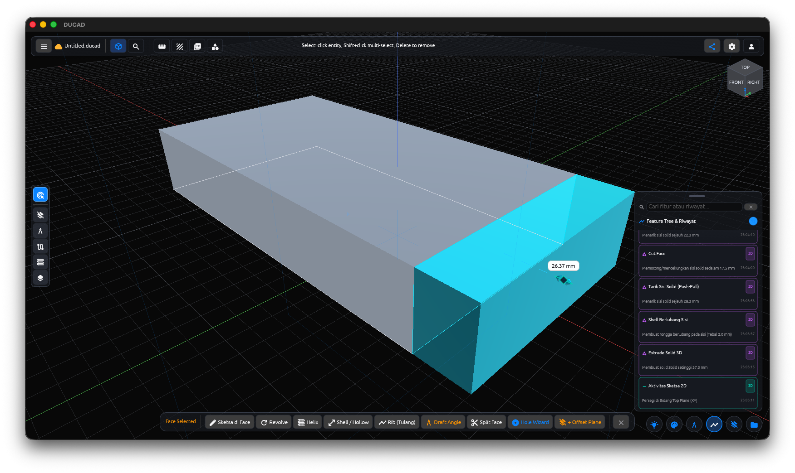
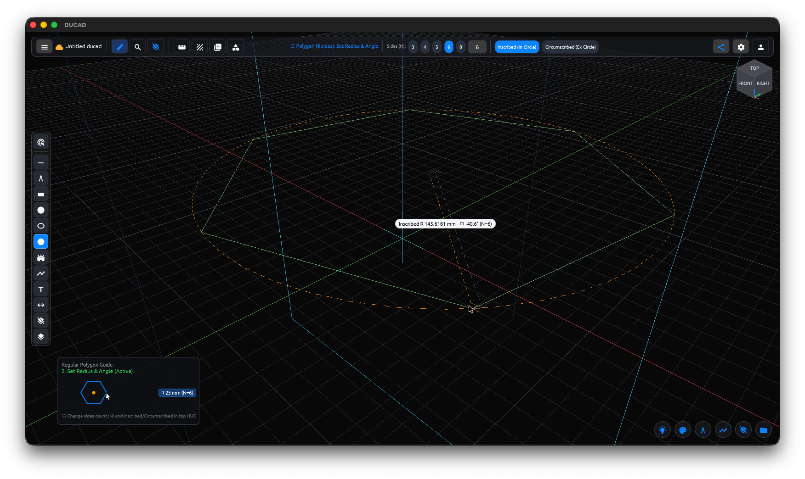
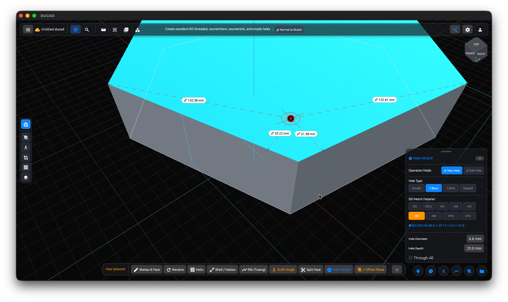
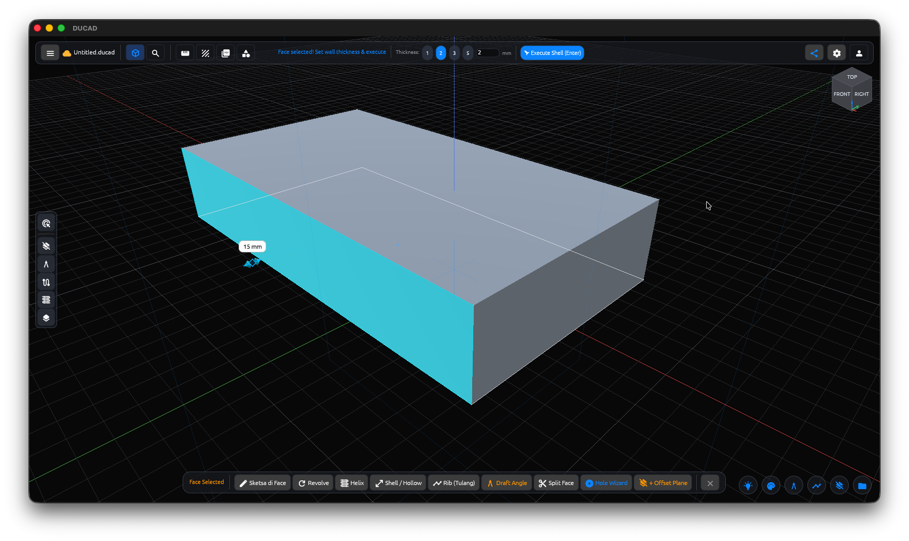
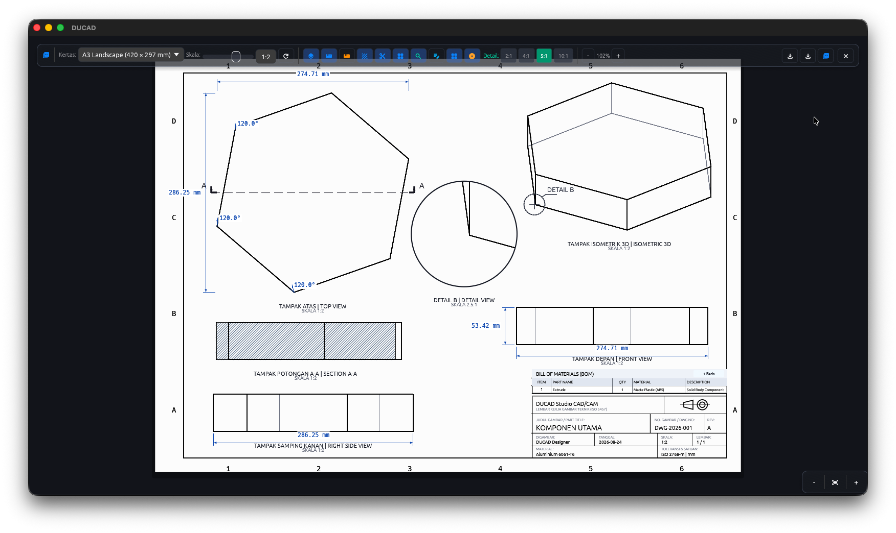

📐
Parametric 2D Sketching
Precision geometry, a self-contained constraint solver, and tiered smart snapping for an accurate design foundation.
Design Universe CAD
DuCAD combines the precision of AutoCAD-style 2D technical drafting with the intuitive ease of Shapr3D-style direct modeling — powered by the industrial-grade OpenCASCADE (OCCT) solid modeling kernel and modern WebGPU-accelerated graphics.

Core Capabilities
From precise 2D sketches to production-ready technical drawings — every stage of engineering design lives in one consistent workflow.
A complete sketching toolkit with a self-contained geometric/dimensional constraint solver, tiered smart snapping, and interactive curve editing — the precision foundation for every 3D model built on top.

Powered by the OpenCASCADE (OCCT) kernel — one of the most mature open-source B-Rep kernels in the industry — not a polygon mesh, so every model is precise and manufacturing-ready.

Hollow out solids with uniform wall thickness and perform push-pull direct modeling on any planar or curved face in real time.

Every design step is recorded as a node in a traceable, editable, regenerable Directed Acyclic Graph (DAG) — not just a linear undo list.
Generate standardized multi-view engineering drawings from 3D models with ISO/ANSI layouts, cross-section hatching, automated dimensions, and Bill of Materials (BOM) tables.

Full Coverage
Precision geometry, a self-contained constraint solver, and tiered smart snapping for an accurate design foundation.
Extrude, Revolve, Loft, Sweep, Boolean, Fillet/Chamfer, Shell, Draft, and an ISO-standard Hole Wizard — industrial-grade via OCCT.
Free reference planes: Offset, Angled, and 3-Point Plane at any 3D coordinate.
Multi-view projection, Hidden Line Removal, ISO/ANSI-hatched Section View, Detail View, automatic dimensions, BOM tables, and title blocks.
Multi-part Assembly Tree, 3D Mate Constraints (Concentric, Coincident, Distance, Angle), and automatic collision testing.
DAG-based design history with automatic regeneration when older feature parameters change.
Import/export STEP, DXF, GLTF/GLB, SVG, PDF, STL, OBJ, PLY, 3MF, and the native .ducad format.
Command Palette, Radial Menu, ViewCube, PBR studio lighting with SSAO, and support for 18+ languages.
No cloud dependency — all design data stays local on the user's device.
Why DuCAD
DuCAD is built as a modern alternative to proprietary CAD — adopting a real, industrial-class B-Rep kernel without million-dollar licensing fees or monthly subscriptions.
| Aspect | AutoCAD | Shapr3D | DuCAD |
|---|---|---|---|
| Solid modeling kernel | Autodesk ShapeManager (ACIS-derived) | Siemens Parasolid (proprietary) | OpenCASCADE (OCCT) — genuine open-source B-Rep |
| Kernel licensing cost | Bundled into expensive Autodesk licensing | Bundled into the Shapr3D subscription | No kernel licensing cost |
| 2D technical drawings | Strong industry standard, included | Paid add-on (≈$38/month) | Fully included, no extra cost |
| Data storage & privacy | Proprietary (.dwg) + Autodesk Cloud | Proprietary (.shapr) + cloud sync | Open formats (.ducad, STEP, DXF) — 100% offline |
| Stack & runtime performance | Decades-old monolithic C++, heavy RAM (~1.5–3GB) | Swift + C++ (Parasolid), macOS/iOS-centric | 100% modern Rust, memory-safe, RAM <150MB, startup <1s |
| Direct modeling (push/pull) | Separate commands (PRESSPULL/EXTRUDE/SUBTRACT) | Automatic Adaptive Push/Pull | Smart Boolean Cut Detection — real-time overlap detection |
Summary adapted from DuCAD's internal technical comparative analysis against the AutoCAD and Shapr3D architectures.
Interoperability
Workflow
Instant access to every tool via text search.
Ctrl/⌘ + KA circular menu under the cursor for essential tools.
SpaceCamera orientation control: Top, Front, Right, Isometric, Orbit.
Warm Studio, Cool Tech, High Contrast, Sunset Gold, and Cyberpunk Neon presets with SSAO.
Under the Hood
Built modularly across 8 Rust crates — each layer isolated with a clear responsibility.
ducad-coreDocument model, undo/redo, assembly tree, mates, unitsducad-sketch2D sketch engine, constraint solver, snapping, region solverducad-kernelOpenCASCADE B-Rep wrapper: boolean, fillet, hole, helix, sectionducad-renderwgpu engine: 3D camera, PBR shaders, SSAO, grid, sketch overlayducad-ioImport/export for STEP, GLB/GLTF, SVG, PDF, DXF, STL, OBJducad-uiegui components: toolbar, context bar, HUD, drawing sheet, drawersducad-i18nLocalization & translation dictionaries for 18+ languagesducad-appMain application, winit/eframe event loop, window managementGet Started
rustupThe first build compiles OpenCASCADE from source (~8–15 minutes) and is cached permanently in target/ — subsequent builds are instant.
git clone https://github.com/cmjcode/ducad.git
cd DUCAD
# Run the application
cargo run -p ducad-app
# Run unit & integration tests
cargo test --workspace